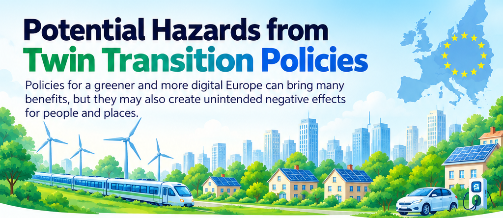

Mire vonatkoznak a kockázatok?
A kockázatok a zöld és digitális transzformáció politikáiból eredő potenciális negatív következmények vagy nem várt hatásai, amelyek az emberek, közösségek és helyszínekre hatnak.
 Legfontosabb téma a te régiódhoz
Legfontosabb téma a te régiódhoz
Nincs elérhető területi kockázat.
 Kiegészítő kockázatok
Kiegészítő kockázatok
Nincs elérhető kiegészítő kockázat.

Miért fontos ez?
Ezért megérthetjük, hogyan tervezhetünk egyenlőbb és包含abb politikákat, amelyek biztosítják az összes számára a zöld és digitális transzformáció előnyeit.